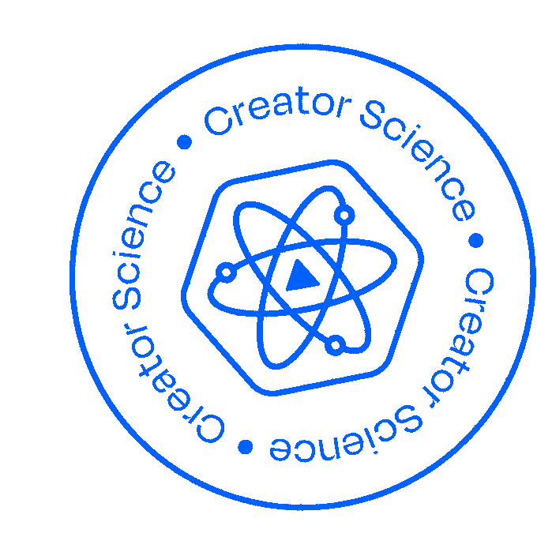

My Promise is specific enough that a member can say what they're staying for in one sentence
Your weakest mechanicNew members meet 2–3 other members by name inside their first 30 days. Friend-making is designed, not hoped for
Your weakest mechanicA small-room structure exists (pod, mastermind, cohort), not just one big feed
Your weakest mechanicMembers get the value without adding a new platform to their life
Your weakest mechanicSomeone would notice, and say something, if a specific member went quiet for two weeks
Your weakest mechanicMy cadence is sustainable for ME at month 9, not just month 1. The room is a resource, not a task, for members and for me
Your weakest mechanicI know what I'll stop shipping when the calendar fills. Subtraction is planned, not forced
Your weakest mechanicAt least one ritual exists that members would genuinely miss if it disappeared
Your weakest mechanicRenewal is framed on what compounds (the relationships, the room), not on fresh drops
Your weakest mechanicA path exists for member-led activity that doesn't route through me
Your weakest mechanicI've asked members the five-question survey in the last 90 days, and the answers changed something
Your weakest mechanicPairs with your 30/60/90 Roadmap. Both live pinned in the Summit Telegram.

membershipsummit.com